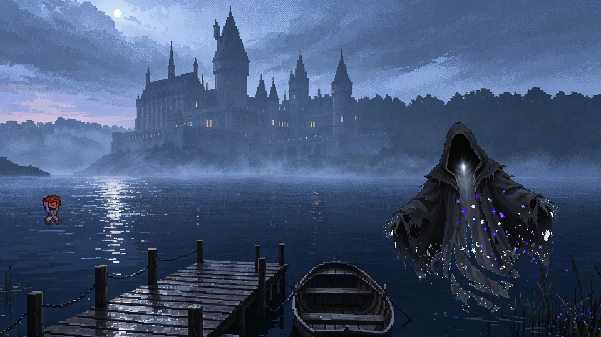
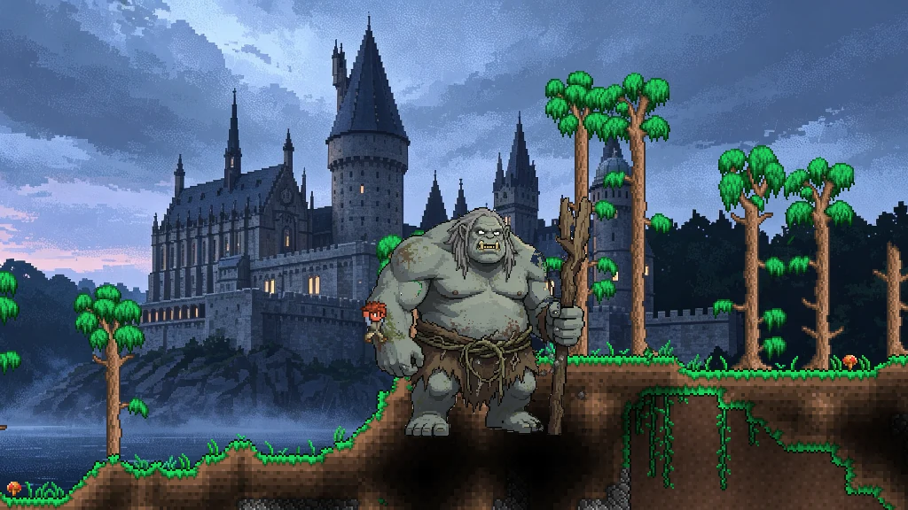
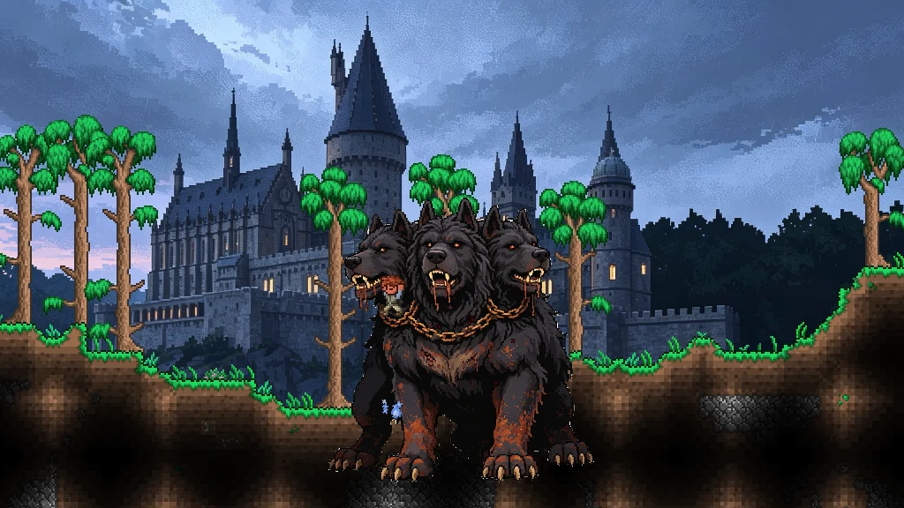
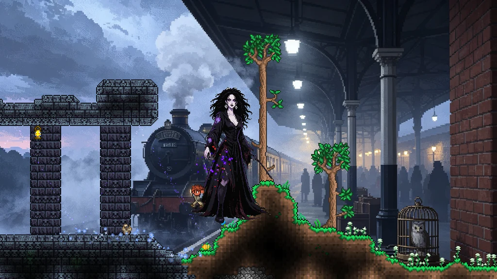
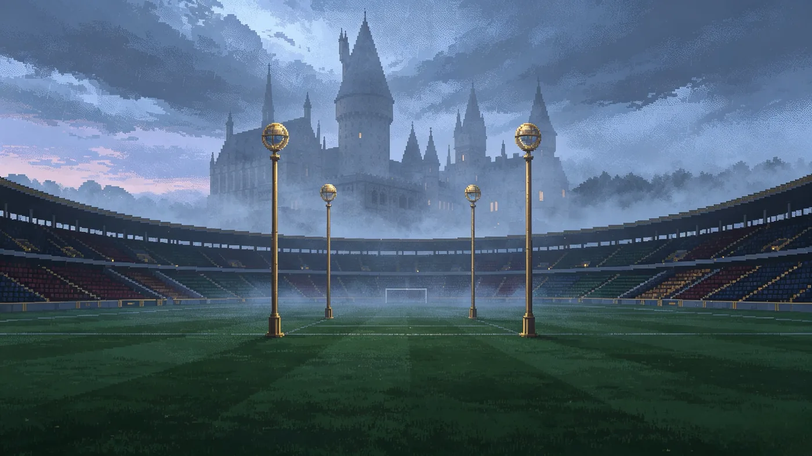
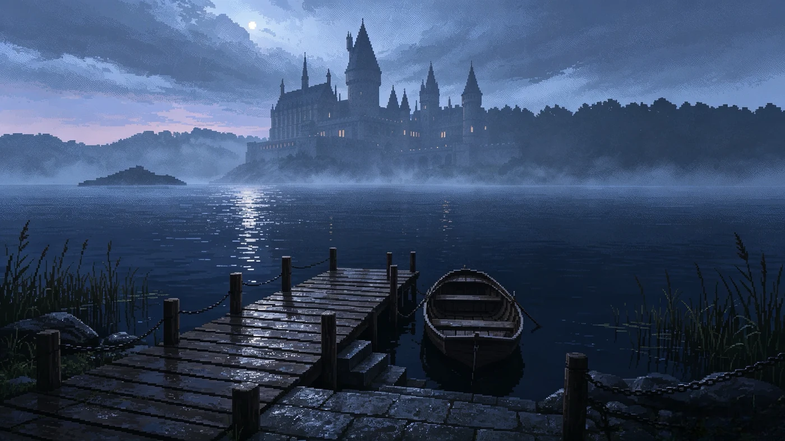
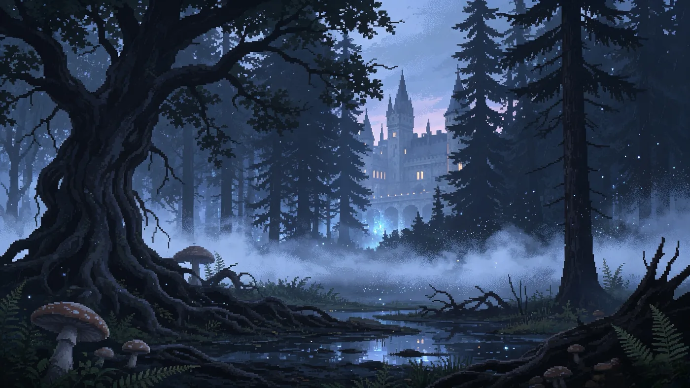

Wizarding World
A Harry Potter adventure for Terraria. Start as a Hogwarts student with your first wand, fight through 12 bosses, hunt down the Horcruxes and face Lord Voldemort, then claim the Deathly Hallows.
- Role
- Solo developer, with AI tools: design, code and art direction
- Status
- 1.0 release candidate, July 2026
- Platform
- Terraria (tModLoader)
- Built with
- C#; Claude Code and AI image generation

What it is
Wizarding World turns Terraria, the 2D sandbox game, into a Harry Potter adventure, from your first wand to the final battle. It all unfolds in a Pensieve: relive memories from across wizarding history, from the Basilisk and Aragog to the Battle of Hogwarts, and replay any boss you like.
Between the bosses there’s a whole wizarding world: wand lore with 18 woods, 5 cores and 9 spell schools; a Dark Arts meter that makes dark magic tempting but costly; class quests for Defense Against the Dark Arts, Potions, Creatures and Charms; Quidditch seasons with Seeker ranks; Hogsmeade and the Shrieking Shack; and a three-zone Forbidden Forest that grows more dangerous the deeper you go.
Twelve bosses
From the Mountain Troll to the Dark Lord himself:
 Mountain Troll
Mountain Troll Quirrell
Quirrell Basilisk
Basilisk Aragog
Aragog Fluffy
Fluffy Horntail
Horntail Umbridge
Umbridge Fenrir
Fenrir Bellatrix
Bellatrix Barty Crouch Jr.
Barty Crouch Jr. Dementor King
Dementor King Lord Voldemort
Lord Voldemort
Before the final battle, destroy four Horcruxes and hunt down Nagini to weaken Voldemort. After him come the Deathly Hallows: claim the true Invisibility Cloak from Dumbledore, purify Gaunt’s Ring into the Resurrection Stone, and equip all three Hallows to become Master of Death. A Boss Compass and a Wizard’s Almanac show you where to go next.





The world
Every area has its own backdrop, from Hogwarts across the Black Lake to the Forbidden Forest at night.





Credits
Developed by Xinyue (Lily) Feng with AI tools: the code was written with Claude Code and the sprites generated with AI image tools. The source and a player guide are on GitHub.
An unofficial, non-commercial fan project. Harry Potter © Warner Bros. Entertainment and J.K. Rowling; Terraria © Re-Logic.